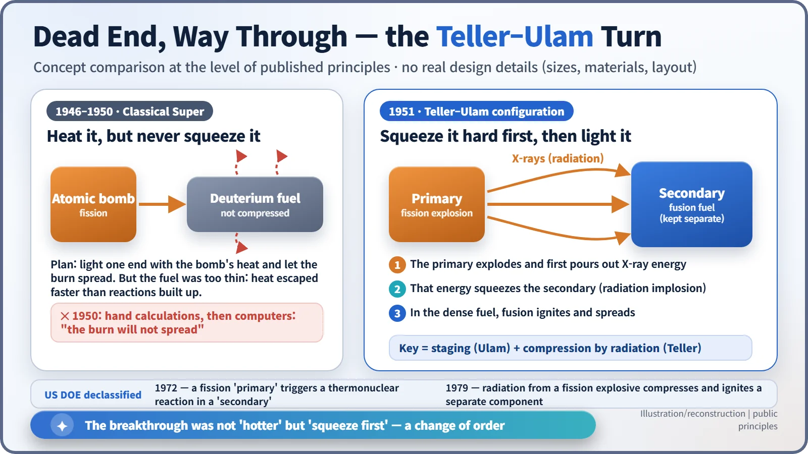
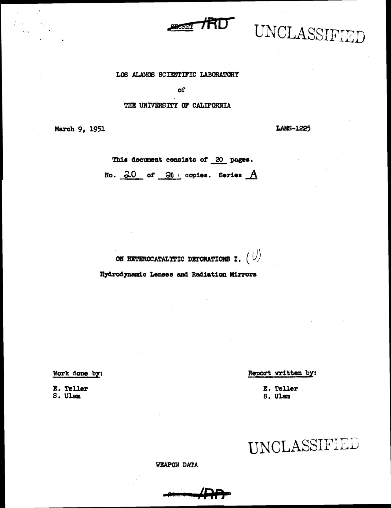
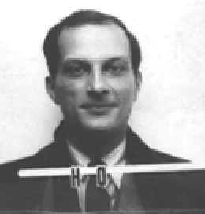
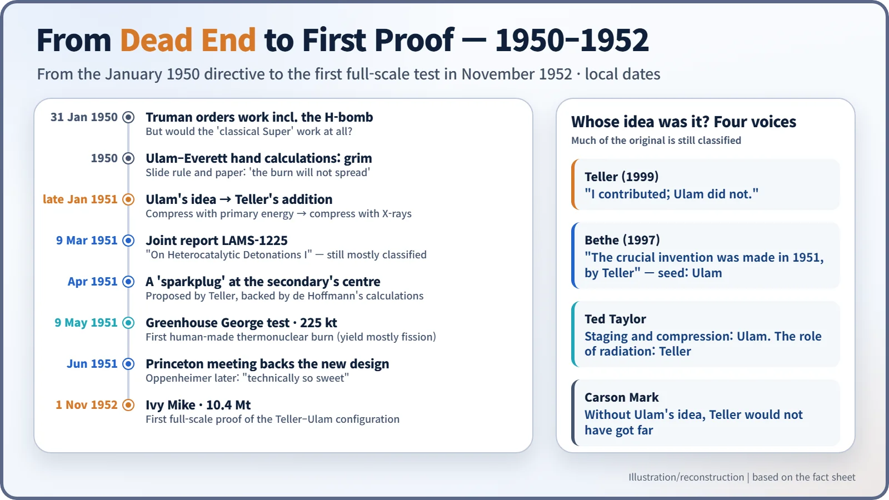

Nuclear History · 136
Squeeze First, Then Light — the Teller–Ulam Idea That Broke the H-Bomb Deadlock (1951)
After calculations in 1950 showed the 'classical Super' would not burn, a change of order in early 1951 (squeeze first, then ignite) became the basis of the hydrogen bomb.
By 1950 the American "Super" was stuck: calculations showed that simply heating fusion fuel with an atomic explosion would not make the burn spread. In early 1951 Stanisław Ulam proposed compressing the fuel first, and Edward Teller added that the fission explosion's X-rays should do the squeezing. Their joint report of 9 March 1951 became the basis of the hydrogen bomb, and who deserves the credit is still argued over.
The man at the window
One day in early 1951, at noon, in a house in Los Alamos, New Mexico, Françoise Ulam found her husband staring intently out of the living-room window. Recalling the scene some thirty years later, she wrote that he turned and said, "I found a way to make it work." Make what work? The "Super", the hydrogen bomb that had been stuck for more than a year. [6]
The man at the window was the Polish-born mathematician Stanisław Ulam (1909–1984). His idea became a joint report with the Hungarian-born physicist Edward Teller (1908–2003), and afterwards the basic architecture of the hydrogen bomb. We know it as the Teller–Ulam design.
1950: a death sentence written with a slide rule
After the Soviet Union exploded its first atomic bomb in 1949, President Truman on 31 January 1950 directed the Atomic Energy Commission to "continue its work on all forms of atomic weapons, including the so-called hydrogen or superbomb." The real question was whether the Super would work at all. [1]
The idea at the time went like this. Use the enormous heat of an atomic (fission) explosion to light one end of a quantity of deuterium fuel, and let fusion spread along it like a fire along a log. Fission releases energy when heavy nuclei split; fusion releases energy when light nuclei join.
Ulam attacked the problem with his fellow mathematician Cornelius Everett. Their tools were a slide rule, paper and intuition. The answer was grim: the fuel was not dense enough, so heat leaked away faster than the reactions could build, and the fire would not spread. Late in 1950, electronic computer calculations on John von Neumann's side confirmed the same verdict.
The turn: squeeze before you heat
Ulam's idea was to change the order. In late January 1951 he proposed using the energy of an atomic explosion to compress the fusion fuel hard first, and only then ignite it. Think of the difference between trying to burn loose sawdust and pressing it into a dense briquette: in tightly packed fuel, reactions keep going before the heat can escape. [1]
Ulam talked first to the laboratory director, Norris Bradbury, and to J. Carson Mark of the Theoretical Division, then took the idea to Teller. Teller hesitated at first, but soon added the decisive refinement: X-rays (radiation) from the fission explosion, which arrive before any shock wave, would do the squeezing far more powerfully. Two separate parts, a fission "primary" and a fusion "secondary" (staging), with the primary's radiation compressing the secondary (radiation implosion). That is as far as the public principle goes. It is also what the US Department of Energy declassified in 1972 and 1979; the details remain secret. [3]

On 9 March 1951 the two men issued a joint report, LAMS-1225, titled "On Heterocatalytic Detonations I. Hydrodynamic Lenses and Radiation Mirrors". "Heterocatalytic" means, roughly, a detonation set off by something else. Even the declassified copy has most of its text blacked out. [3]

In April, Teller added a "sparkplug" at the centre of the secondary, backed by calculations from the young physicist Frederic de Hoffmann. [1]
George lights the first spark, Princeton applauds
On 9 May 1951 (local time), at Enewetak Atoll in the Marshall Islands, Operation Greenhouse fired its "George" shot, with a yield of 225 kilotons. A large fission explosion ignited a small amount of thermonuclear fuel: the first human-made fusion burn on Earth. But George had been designed before the breakthrough, so it was not a test of the new design, and most of its yield came from fission. [2] [4]
That June, scientists gathered at the Institute for Advanced Study in Princeton agreed that the new design should be tested. Robert Oppenheimer, who two years earlier had opposed a crash hydrogen bomb programme, testified at his security hearing on 16 April 1954 that the 1951 scheme was "technically so sweet that you could not argue about that." The design was first proven in the Ivy Mike test on 1 November 1952. [2] [5]
The seed and the child — a credit dispute that never ended
Whose idea was it? Because much of the original record is still classified, there is no settled answer, only conflicting statements.

In 1955 Teller wrote an article for Science called "The Work of Many People", stressing the contributions of others; yet in a 1999 interview he said, "I contributed; Ulam did not." Hans Bethe wrote in 1997 that "the crucial invention was made in 1951, by Teller," while also offering the image that Ulam supplied the seed and Teller raised the child. The physicist Ted Taylor credited staging and compression to Ulam and the role of radiation to Teller, and Carson Mark said that without Ulam's idea Teller would not have got any further. [3]

The Soviet Union reached the same principle independently, through the "third idea" of Andrei Sakharov and colleagues. What opened the dead end was not "hotter" but "squeeze first", a change of order. The price of that change was the arrival of the megaton age. [3]